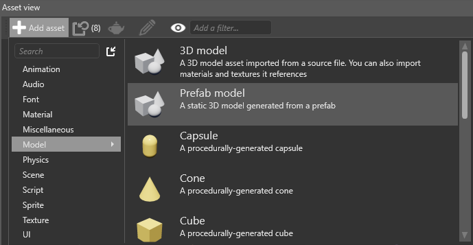
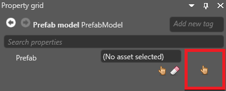

Prefab models
Warning
Приносим свои извинения за неудобства. Для этой страницы нет перевода на русский язык. Она будет отображаться на английском языке.
Beginner Designer
Prefab models convert prefabs to single drawcalls. This is useful for optimization, as Stride only renders the final model instead of the separate entities in the prefab. When you make changes to the prefab, Game Studio regenerates the prefab model.
Drawbacks
Prefab models don't inherit elements such as lights, colliders, or other components — they're only models, and have to be used just like other models. For example, if you have a prefab comprising two models with physics components, the prefab model creates a single model from the two models and ignores the physics components. If you need to add components to a prefab model, add them to the prefab model itself.
Prefab models don't expose materials. This means you can't view or edit them in the prefab model asset, or in model components that use the prefab model.
Create a prefab model
In the Asset View, select Add asset > Model > Prefab model.

In the Property Grid (on the right by default), next to Prefab, click
 (Select asset).
(Select asset).
The Select an asset window opens.

Select the prefab you want to create a model from and click OK.
Game Studio adds the prefab model to the Asset View.